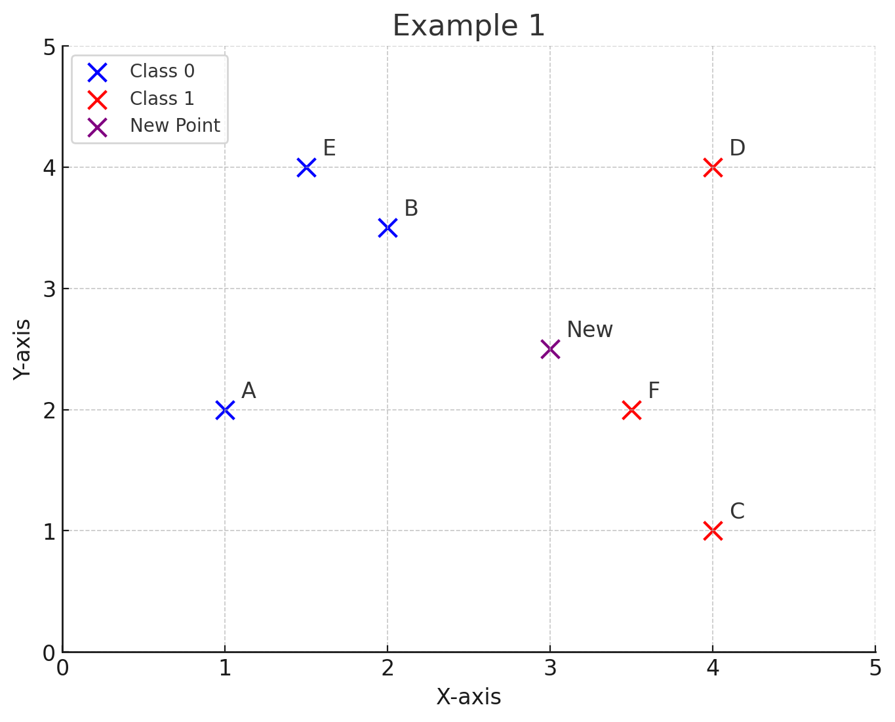
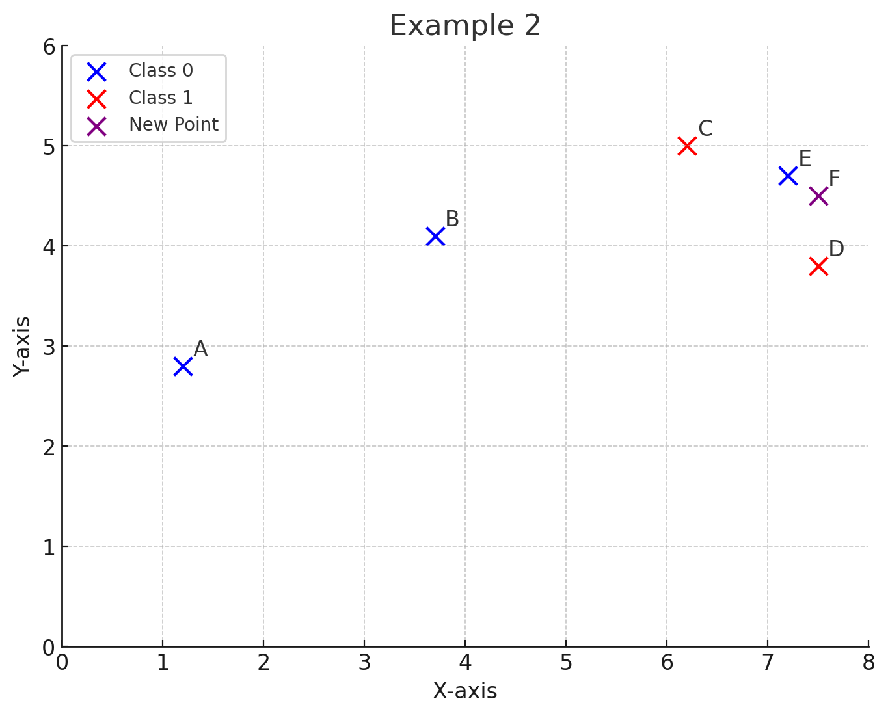

1.1 Lecture Objectives
Provide an overview of classification in machine learning
Distinguish between supervised and unsupervised learning.
Comprehend how learning algorithms work by leveraging experience (data) to improve predictions.
Introduce the key challenges involved in classification tasks
Define the classification task, including how to map inputs \(X\) to discrete outputs \(Y\).
Understand the challenges associated with classification, such as identifying decision boundaries.
Explain predictor classifier modeling and the general process
Discuss different types of classification models:
Case-based vs. Model-based
Feature-based vs. End-to-end
Binary, Multi-class, Multi-label, and Multi-output classification
Introduce and explain two specific classification algorithms:
\(k\)-Nearest Neighbor (\(k\)-NN) Classifier
Naïve Bayes Classifier
Provide examples and case studies to illustrate the application of these classification techniques
1.2 The Learning Algorithm
There are 2 types of learning algorithms
Unsupervised Learning - there is no target label; the algorithm tries to discover structure (e.g., clusters) from \(x\) alone
Unsupervised learning algorithms:
Work with datasets containing multiple features but lacking labeled outputs.
Aim to learn useful properties about the structure of the data.
A common goal is clustering similar examples together.
Key Application:
Discover hidden patterns in data.
Example Algorithms:
K-means clustering
Hierarchical (agglomerative) clustering
Gaussian mixture models (GMMs)
Principal component analysis (PCA)
Autoencoders
Supervised Learning - there is a target label \(y\); the algorithm learns a mapping from inputs \(x\) to outputs \(y\) (i.e., \(p(y \mid x)\))
Supervised learning algorithms:
Work with datasets where each example is associated with a label or target.
Learn a mapping function \(p(y|\mathbf{x})\) based on labeled instances \(\mathbf{x}\) and their corresponding labels \(y\).
Example:
The Iris dataset, where measurements of iris plants are annotated with species labels.
A supervised learning algorithm can study this dataset and learn to classify iris plants into three different species based on their measurements.
Key Idea:
The term "supervised" reflects the role of an instructor providing correct labels to guide the learning process.
Example Algorithms:
Logistic regression
Decision trees / random forests
Support vector machines (SVMs)
k-NN classifier
Neural networks (CNNs, RNNs, MLPs, etc.)
1.3 Classification
Classification is the task of approximating a mapping function \(f: X \rightarrow Y\), where \(X\) is the set of input variables, and \(Y\) is the set of discrete output variables (classes). The goal is to label objects in \(X\) with their correct class in \(Y\). The process of classification finds decision boundaries between labeled data and uses that boundary to label new, unseen data.
In 2D, a decision boundary is typically a curve (or line) that separates regions assigned to different classes; in higher dimensions it becomes a separating surface. Once a boundary is learned from labeled data, predicting a new data point reduces to determining which side of the boundary it lies on.
1.3.1 Classification vs Regression vs Clustering
Classification: Finds decision boundary(ies) between labeled data and uses that boundary to label new objects.
Regression: Finds a linear or non-linear real-valued function to predict mapping to a single value.
Clustering: Groups similar non-labeled data into clusters. The number of clusters is generally pre-determined, but it could be estimated by the clustering method.
1.3.2 Types of Classification Models
Case-based vs. Model-based
Case-based:
Does not explicitly learn a parametric model during training (stores the data instead).
Accumulates data and processes it only during query time to predict the class of new data.
– Example: k-Nearest Neighbor (k-NN) assigns a label to new data based on the most related data in the stored training data.
Model-based:
Creates a classification model based on the given training data before receiving new data.
The model is then used for quick predictions later.
- Example: Decision Tree, Naive Bayes, Artificial Neural Networks.
Feature-based vs. End-to-End
Feature-based models require extracting a set of features (feature vectors) from each data item in the raw dataset.
End-to-end models train directly on inputs, learning features automatically.
Binary vs. Multi-class vs. Multi-label Classification
Binary Classification: Distinguishes between two classes, often as a specific class vs. the rest.
Example: Support Vector Machines (SVM).
Multi-class Classification: Handles more than two classes.
Example: Random Forest.
Multi-label Classification: Classifies a single instance into multiple classes simultaneously.
Suitable for cases where multiple objects of interest are present in a single input.
Multi-output Classification
Predicts multiple target variables simultaneously (each output may be binary or multi-class).
1.4 k-Nearest Neighbor (k-NN) Classifier
The \(k\)-Nearest Neighbor (k-NN) classifier is a non-parametric learning algorithm used for both classification and regression. Its strength lies in the simplicity of the algorithm and the fact that it doesn’t require model training but instead relies on the entire dataset at prediction time.
1.4.1 Overview
\(k\)-NN is considered a lazy learner, meaning it does not build a model during the training phase. Instead, all computations are postponed until a prediction is made.
The classifier was first used in the 1970s and has since been applied in various fields, particularly in pattern recognition and statistical estimation.
It is considered a non-parametric technique, where the only adjustable parameter is \(k\), the number of neighbors considered.
1.4.2 Algorithm
Given a dataset of labeled samples and a new sample to be classified:
Calculate the distance between the new sample and all stored samples in the dataset using a chosen distance metric.
Identify the \(k\) samples with the smallest distances (nearest neighbors).
Assign the class label of the new sample based on the majority class among the \(k\) nearest neighbors.
Special case: When \(k = 1\), the new sample is classified based on its nearest neighbor, which can increase variance.
1.4.3 Distance Metrics
In \(k\)-NN, the distance between data points is a key factor. Here, \(\mathbf{x}, \mathbf{y} \in \mathbb{R}^d\), and \(d\) is the number of features (dimensions). Common distance metrics include:
Euclidean Distance: \[d(\mathbf{x}, \mathbf{y}) = \sqrt{\sum_{i=1}^{d} (x_i - y_i)^2}\] - Measures the straight-line distance between two points in \(d\)-dimensional space.
- Suitable for continuous variables with similar scales.
Manhattan Distance: \[d(\mathbf{x}, \mathbf{y}) = \sum_{i=1}^{d} |x_i - y_i|\] - Measures the sum of absolute differences between feature values.
- Useful for minimizing linear distances, more robust to outliers than Euclidean.
Minkowski Distance: \[d(\mathbf{x}, \mathbf{y}) = \left( \sum_{i=1}^{d} |x_i - y_i|^q \right)^{\frac{1}{q}}\] - Generalizes Euclidean (when \(q = 2\)) and Manhattan (when \(q = 1\)) distances, where \(q \geq 1\) is the order parameter.
- Flexible, allowing adjustment based on problem specifics.
Hamming Distance (for categorical variables): \[d(\mathbf{x}, \mathbf{y}) = \sum_{i=1}^{d} \mathbf{1}[x_i \neq y_i]\] - Counts the number of differing attributes between two categorical samples.
- Ideal for comparing binary/categorical feature vectors (e.g., strings).
1.4.4 Example 1: Classification Using Euclidean Distance
Consider a dataset where we need to classify a new data point based on its nearest neighbors. The dataset consists of the following labeled data points:
Data Point A: \((1, 2)\) - Class 0
Data Point B: \((2, 3.5)\) - Class 0
Data Point C: \((4, 1)\) - Class 1
Data Point D: \((4, 4)\) - Class 1
Data Point E: \((1.5, 4)\) - Class 0
Data Point F: \((3.5, 2)\) - Class 1
The new data point to classify is \((3, 2.5)\).

Step 1: Calculate Euclidean Distances
\(d(\text{New Point}, A) = \sqrt{(3 - 1)^2 + (2.5 - 2)^2} = \sqrt{2^2 + 0.5^2} = \sqrt{4.25} \approx 2.06\)
\(d(\text{New Point}, B) = \sqrt{(3 - 2)^2 + (2.5 - 3.5)^2} = \sqrt{1^2 + (-1)^2} = \sqrt{2} \approx 1.41\)
\(d(\text{New Point}, C) = \sqrt{(3 - 4)^2 + (2.5 - 1)^2} = \sqrt{(-1)^2 + 1.5^2} = \sqrt{3.25} \approx 1.80\)
\(d(\text{New Point}, D) = \sqrt{(3 - 4)^2 + (2.5 - 4)^2} = \sqrt{(-1)^2 + (-1.5)^2} = \sqrt{3.25} \approx 1.80\)
\(d(\text{New Point}, E) = \sqrt{(3 - 1.5)^2 + (2.5 - 4)^2} = \sqrt{1.5^2 + (-1.5)^2} = \sqrt{4.5} \approx 2.12\)
\(d(\text{New Point}, F) = \sqrt{(3 - 3.5)^2 + (2.5 - 2)^2} = \sqrt{(-0.5)^2 + 0.5^2} = \sqrt{0.5} \approx 0.71\)
Step 2: Identify Nearest Neighbors
For \(k = 3\), the nearest neighbors are:
Points F, B, and C (tie with D; choose C by index order), since these have the smallest distances.
Step 3: Assign Class Label
The majority class among the nearest neighbors is:
2 neighbors from Class 1 (F and C), 1 from Class 0 (B). Class 1 is assigned.
1.4.5 Example 2: Classification with an Outlier Using Manhattan Distance
Consider a dataset with an outlier, appearing to be misclassified or on the wrong side of the decision boundary:
Data Point A: \((1.2, 2.8)\) - Class 0
Data Point B: \((3.7, 4.1)\) - Class 0
Data Point C: \((6.2, 5.0)\) - Class 1
Data Point D: \((7.5, 3.8)\) - Class 1
Data Point E: \((7.2, 4.7)\) - Class 0
(Outlier)
The new data point to classify is \((7.5, 4.5)\) (we’ll call it F).

Step 1: Calculate Manhattan Distances
\(d(\text{New Point}, A) = |7.5 - 1.2| + |4.5 - 2.8| = 6.3 + 1.7 = 8.0\)
\(d(\text{New Point}, B) = |7.5 - 3.7| + |4.5 - 4.1| = 3.8 + 0.4 = 4.2\)
\(d(\text{New Point}, C) = |7.5 - 6.2| + |4.5 - 5.0| = 1.3 + 0.5 = 1.8\)
\(d(\text{New Point}, D) = |7.5 - 7.5| + |4.5 - 3.8| = 0.0 + 0.7 = 0.7\)
\(d(\text{New Point}, E) = |7.5 - 7.2| + |4.5 - 4.7| = 0.3 + 0.2 = 0.5\)
Scenario 1: k = 1, Including Outlier
With \(k = 1\) and the outlier included, the nearest neighbor is:
Point E (the outlier), which is closest with a distance of 0.5.
Since Point E is labeled as Class 0, the new point is classified as Class 0.
Scenario 2: k = 1, Removing Outlier
If we remove the outlier (Point E), the new nearest neighbor is:
Point D, with a distance of 0.7.
Since Point D is labeled as Class 1, the new point is classified as Class 1.
Scenario 3: k = 3, Including Outlier
With \(k = 3\) and the outlier included, the three nearest neighbors are:
Point E (Class 0) with a distance of 0.5
Point D (Class 1) with a distance of 0.7
Point C (Class 1) with a distance of 1.8
The majority class among these neighbors is Class 1 (2 neighbors from Class 1 and 1 from Class 0), so the new point is classified as Class 1.
Here we see how having outliers, e.g. due to noisy data, can affect the k-NN algorithm. We can see from this example that increasing \(k\) made the model less sensitive to the outlier, but if we were to increase \(k\) too much then it could lead to underfitting (see below).
1.4.6 Choosing the Value of \(k\)
Selecting \(k\) is crucial:
Small \(k\) values lead to high variance (overfitting).
Larger \(k\) values reduce variance but can introduce bias (underfitting).
Cross-validation can be used to determine the optimal \(k\) by evaluating performance on validation sets.
1.4.7 Feature Scaling
1.4.7.1 Min-Max Normalization
Distance metrics can be biased if features have different scales.
For example, in the scenario covered in class, loan amounts (in dollars) may dominate the distance calculation compared to age (in years).
To address this, features should be normalized: \[x'_{i,j} = \frac{x_{i,j} - \min(x_{:,j})}{\max(x_{:,j}) - \min(x_{:,j})}\]
Where:
\(x'_{i,j}\) is the normalized value of the feature.
\(x_{i,j}\) is the original value of the feature.
\(\min(x_{:,j})\) and \(\max(x_{:,j})\) are the minimum and maximum values of the feature across the dataset.
Here we use min–max normalization (scales to [0, 1]). This transformation scales all features to a [0, 1] range, preventing any single feature from dominating the distance computation.
1.4.7.2 Z-Score Standardization
Another common feature scaling method is z-score standardization, which centers the data to mean 0 and scales it to unit variance.
Useful when features have different spreads/variances and when outliers may affect min–max scaling. \[x'_{i,j} = \frac{x_{i,j} - \mu_j}{\sigma_j}\]
Where:
\(x'_{i,j}\) is the standardized value of feature \(j\) for sample \(i\).
\(\mu_j\) is the mean of feature \(j\) across the dataset.
\(\sigma_j\) is the standard deviation of feature \(j\) across the dataset.
Z-score standardization ensures features have comparable scale (mean 0, variance 1), which improves distance-based methods like \(k\)-NN.
1.5 Naïve Bayes Classifier
The Naïve Bayes classifier is a probabilistic model based on applying Bayes’ theorem with the “naïve” assumption that the features are conditionally independent given the class label and performs surprisingly well for certain tasks, particularly in text classification.
1.5.1 Overview
The Naïve Bayes classifier assumes that all features are conditionally independent given the class label.
It is a generative model, meaning it models \(P(x \mid y)\) and \(P(y)\).
This method is well-suited for high-dimensional data and performs well even with a small amount of training data.
1.5.2 Bayes’ Theorem
The Naïve Bayes classifier uses Bayes’ theorem: \[P(y \mid \mathbf{x}) = \frac{P(\mathbf{x} \mid y)P(y)}{P(\mathbf{x})}\] Where:
\(P(y \mid \mathbf{x})\) is the posterior probability of class \(y\) given the feature vector \(\mathbf{x}\).
\(P(\mathbf{x} \mid y)\) is the likelihood of the feature vector \(\mathbf{x}\) given class \(y\).
\(P(y)\) is the prior probability of class \(y\).
\(P(\mathbf{x})\) is the evidence or the marginal likelihood.
The “naïve” assumption imposes the condition that the features \(x_i\) are conditionally independent on the class label \(y\). Given this assumption, the likelihood \(P(\mathbf{x} \mid y)\) can be simplified as: \[P(\mathbf{x} \mid y) = \ \prod_{i=1}^{d} P(x_i \mid y)\] where \(x_i\) represents individual features. Note that this is a strong assumption, but even if it’s not totally accurate for a given dataset, it turns out to work very well in practice.
1.5.3 Types of Naïve Bayes Models
There are several variants of the Naïve Bayes classifier depending on the nature of the features:
Gaussian Naïve Bayes:
Assumes that continuous features follow a normal distribution.
For each class \(y\), we estimate \(\mu_y\) and \(\sigma_y\) from the training examples belonging to that class (and typically separately for each feature).
The likelihood is computed using: \[P(x_i \mid y) = \frac{1}{\sqrt{2\pi\sigma_y^2}} \mathrm{e}^{-\frac{(x_i - \mu_y)^2}{2\sigma_y^2}}\]
\[P(x \mid y) = \prod_{i=1}^d P(x_i \mid y)\]
Here, \(\mu_y\) and \(\sigma_y\) are the mean and standard deviation of the feature \(x_i\) for class \(y\) (typically separately for each feature).
Multinomial Naïve Bayes:
Used for discrete count features (e.g., text classification).
Likelihood: \[P(x \mid y)= \frac{\left(\sum_{j=1}^d x_j\right)!}{\prod_{j=1}^d x_j!} \prod_{j=1}^d \theta_{y,j}^{\,x_j}\]
Here, \(\theta_{y,j} = P(\text{feature }j \mid y)\).
The multinomial coefficient is constant w.r.t. \(y\) and is often ignored in prediction.
Bernoulli Naïve Bayes:
Suitable for binary/boolean features.
The model assumes that features are binary indicators (\(x_j \in \{0,1\}\); e.g., presence or absence of a word in a document).
Likelihood: \[P(x \mid y)=\prod_{j=1}^d p_{y,j}^{\,x_j}(1-p_{y,j})^{(1-x_j)}\]
1.5.4 Advantages and Disadvantages
Advantages:
Fast: Naïve Bayes is computationally efficient and works well with large datasets.
Multi-class prediction: It handles multiple classes naturally.
Low storage requirements: It only needs to store a small set of parameters per class (e.g., feature statistics/probabilities).
Disadvantages:
Zero-frequency problem: If a class-feature combination is not observed in training data, the model assigns zero probability. Smoothing techniques like Laplace smoothing can help mitigate this.
Strong independence assumption: The naive assumption of independence is often unrealistic, which can lead to lower accuracy.
Poor probability calibration: Predicted probabilities can be overconfident (especially when independence assumption fails).
1.5.5 Applications
Naïve Bayes is commonly applied in:
Text Classification: Including spam detection and sentiment analysis.
Real-time prediction: Due to its efficiency, it is well-suited for real-time applications.
Recommendation Systems: Used in content-based recommendation (e.g., modeling user/item attributes, collaborative filtering, etc.).
1.5.6 Example (done in class & available in lecture slides)
Consider a weather dataset where the goal is to predict if a game will be played based on weather conditions (e.g., sunny, rainy) and wind conditions (e.g., strong, weak). Using the Naïve Bayes approach, we would:
Convert the dataset into a frequency table.
Build a likelihood table by determining the likelihoods for each feature given the class.
Use Bayes’ theorem to compute the posterior probabilities and predict the class with the highest probability.
1.5.7 Another Example: Email Spam Classification
In this example, we develop a spam filter using the (Bernoulli) Naïve Bayes classifier to classify emails as either “Spam" or “Not Spam" based on the presence or absence of certain keywords.
Step 1: Dataset
Consider the following dataset of emails, with features indicating the presence (1) or absence (0) of specific keywords:
| Contains “offer" | Contains “free" | Contains “win" | Class | |
|---|---|---|---|---|
| 1 | 1 | 1 | 1 | Spam |
| 2 | 1 | 0 | 1 | Spam |
| 3 | 0 | 1 | 1 | Spam |
| 4 | 0 | 1 | 0 | Not Spam |
| 5 | 1 | 0 | 0 | Not Spam |
| 6 | 0 | 0 | 1 | Spam |
| 7 | 0 | 0 | 0 | Not Spam |
The goal is to classify a new email with the following feature vector: \((1, 1, 0)\) (i.e., it contains “offer" and “free", but not “win").
Step 2: Convert the Dataset into a Frequency Table
First, we compute the frequencies of each feature for the classes “Spam" and “Not Spam".
Feature: contains “offer"
| Spam | Not Spam | Total | |
|---|---|---|---|
| Yes (1) | 2 | 1 | 3 |
| No (0) | 2 | 2 | 4 |
| Total | 4 | 3 | 7 |
Feature: contains “free"
| Spam | Not Spam | Total | |
|---|---|---|---|
| Yes (1) | 2 | 1 | 3 |
| No (0) | 2 | 2 | 4 |
| Total | 4 | 3 | 7 |
Feature: contains “win"
| Spam | Not Spam | Total | |
|---|---|---|---|
| Yes (1) | 4 | 0 | 4 |
| No (0) | 0 | 3 | 3 |
| Total | 4 | 3 | 7 |
Step 3: Build the Likelihood Table
Using the frequency tables above, we calculate the likelihood of each feature given the class.
Likelihood:
| Feature | P(Feature \(\mid\) Spam) | P(Feature \(\mid\) Not Spam) |
|---|---|---|
| Contains “offer" (1) | 2/4 | 1/3 |
| Does not contain “offer" (0) | 2/4 | 2/3 |
| Contains “free" (1) | 2/4 | 1/3 |
| Does not contain “free" (0) | 2/4 | 2/3 |
| Contains “win" (1) | 4/4 | 0/3 |
| Does not contain “win" (0) | 0/4 | 3/3 |
Step 4: Apply Bayes’ Theorem and Make a Prediction
Now, we calculate the posterior probability for each class (Spam and Not Spam) using Bayes’ theorem. We multiply the prior probability of each class by the likelihood of the features given that class.
The prior probabilities are calculated as follows: \[P(\text{Spam}) = \frac{4}{7}, \quad P(\text{Not Spam}) = \frac{3}{7}\]
For the new email with the feature vector \((1, 1, 0)\):
\[P(\text{Spam $\mid$ (1, 1, 0)}) \propto P(\text{Spam}) \times P(\text{cont. offer $\mid$ Spam}) \times P(\text{cont. free $\mid$ Spam}) \times P(\text{not cont. win $\mid$ Spam})\] \[= \frac{4}{7} \times \frac{2}{4} \times \frac{2}{4} \times \frac{0}{4} = 0\]
\[P(\text{Not Spam $\mid$ (1, 1, 0)}) \propto P(\text{Not Spam}) \times P(\text{offer $\mid$ Not Spam}) \times P(\text{free $\mid$ Not Spam}) \times P(\text{not win $\mid$ Not Spam})\] \[= \frac{3}{7} \times \frac{1}{3} \times \frac{1}{3} \times \frac{3}{3} = \frac{3}{63} = \frac{1}{21}\]
Since \(P(\text{Spam $\mid$ (1, 1, 0)}) = 0\) and \(P(\text{Not Spam $\mid$ (1, 1, 0)}) = \frac{1}{21}\), the classifier predicts that the email is Not Spam. Notice that the model we constructed was sensitive to the \(0/4\) probability for not containing “win" given it’s spam. Hence the other likelihoods were disregarded. This is an example of the zero-frequency problem, and could be mitigated using Laplace smoothing.
1.6 Additional Details
Samples: A sample is a data item to be processed (e.g., classified). It can be a document, a picture, an audio clip, a video, a row in a database or CSV file, or anything describable with a fixed set of quantitative traits.
Features: Features are the distinct traits or properties used to describe each data item quantitatively. These traits can include measurements, attributes, or other characteristics that represent the data item.
Feature Vector: A feature vector is an \(n\)-dimensional vector that contains the concatenation of all features representing a sample. It is used as input to machine learning models.
Feature Extraction: Feature extraction is the process of transforming raw data into a feature vector, typically reducing the dimensionality. It transforms the raw data into more manageable inputs for the model.
Target Class: The target class refers to the correct label or category that the model is trying to predict. For example, in classification tasks, it could be the species of a plant or whether an email is spam or not.
Learning Model: A learning model is a class of functions that an algorithm searches to find one that best estimates the mapping between input data and the target output. The model includes both the computational structure (e.g., decision tree) and the learned parameters (weights and biases).
Training Algorithm: The training algorithm is the procedure that adjusts the model’s parameters based on the training data to optimize its performance in mapping inputs to correct outputs. Examples include gradient descent and backpropagation.
Training/Evaluation Set: The training set is the portion of data used to train the model, while the evaluation (or test) set is used to assess the model’s performance on unseen data. The evaluation set helps to measure the generalization ability of the model.